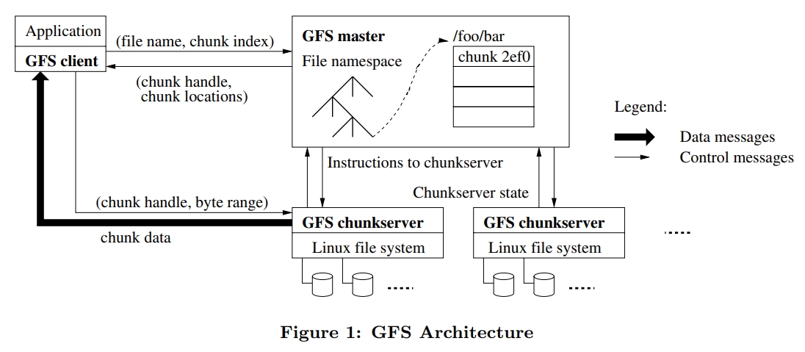
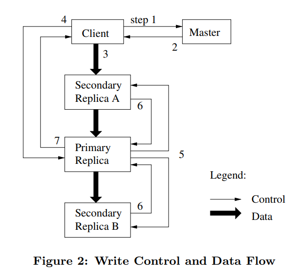
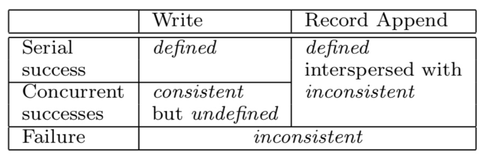

Google File System(GFS) 是一种适用于大型分布式数据密集型应用的可扩展分布式文件系统。它在大量普通机器上运行并提供容错能力，并为大量客户端提供高性能。
GFS 设计原则
- 节点失效是常态。系统由成百上千个普通机器组成，大量用户同时进行访问，这使得节点很容易因程序 bug、磁盘故障、内存故障等原因失效。因此，GFS 必须能够持续地监控自身状态，进行异常检测，同时具有很高的容错性，可以自动地从节点失效中快速回复。
- 存储内容以大文件为主。系统存储上百万个大文件，每个文件通常几百 MB 或几 GB。系统需要支持小文件，但不需要对其进行优化。
- 系统主要文件操作为大容量连续读、小容量随机读以及追加连续写。
- 系统应该支持原子的文件追加操作，使得大量用户可以并行追加文件，而不需要额外的加锁机制。在 Goole 应用场景中，这些文件常用于生产者 - 消费者队列或者多路归并。
- 系统的高吞吐量比低延时更重要。
GFS 集群架构

一个 GFS 集群由一个 Master 节点和若干个 Chunk Server 节点组成，可以被若干个客户端访问。每个节点作为用户级进程运行在 Linux 机器上。
在存储文件时，GFS 会把文件切分成 64MB 的 Chunk 进行存储。Chunk 由一个 Master 分配的不可改变且全局唯一的 64 位 Chunk 句柄进行标识。Chunk Server 在本地磁盘上存储 Chunk，通过指定 Chunk 句柄和字节范围读取或写入 Chunk。为了保证可靠性，每一个 Chunk 会被备份到多个 Chunk Server 上，通常情况下存储三份 Replica。
Master 负责维护整个集群的元数据，包括文件和 Chunk 的命名空间、访问控制信息、文件与 Chunk 的映射和 Chunk Replica 的位置信息。此外，Master 还负责 Chunk 的租期管理、回收和迁移。Master 也会周期地通过心跳包和 Chunk Server 进行通信，以此收集 Chunk Server 的状态并向其发送指令。
客户端与 Master 交互获得集群的元数据。当客户端需要进行数据读写时，不会通过 Master 直接进行，而是询问 Master 应该与哪些 Chunk Server 通信，然后直接与 Chunk Server 通信进行数据读写，以此避免 Master 成为整个集群数据传输的瓶颈，同时，客户端会在一定时间内缓存 Chunk Server 信息，后续操作可以直接与 Chunk Server 进行通信。
Chunk 大小的选取
通常情况下，Chunk 大小为 64MB，这比典型的文件系统 block 大小大得多，可以通过惰性空间分配策略，来避免因内部碎片造成的空间浪费。
选择较大的 Chunk 具有以下优点：
- 减少客户端与 Master 的通信次数，因为对同一个 Chunk 的多次读写只需要请求一次 Chunk 信息。
- 增大客户端操作落到同一个 Chunk 上的概率。由于客户端可以对一个 Chunk 进行多次操作，因此可以通过与 Chunk Server 保持持久的 TCP 连接来减少网络负载。
- 减少 Master 保存的元数据大小，使得可以把元数据全部放在内存中（后面会讲到这样做的好处）。
不过，较大的 Chunk 会使得小文件占据额外的存储空间。此外，小文件通常只会占据一个 Chunk，当大量客户端访问这个小文件时，这个 Chunk 容易成为系统的负载热点。可以通过增加这类文件的 Replica 数量来进行负载均衡，更好的方法是允许客户端从其它客户端读取数据。
GFS 元数据管理
GFS 元数据全部保存在 Master 的内存中，主要包括以下三类信息：
- 文件和 Chunk 的命名空间
- 文件与 Chunk 的映射
- Chunk Replica 的位置信息
元数据保存在 Master 内存中使得 Master 要对元数据作出变更变得极为容易；同时，这也使得 Master 可以简单高效地周期性扫描整个集群的状态，以实现 Chunk 回收、迁移、均衡等操作。唯一的不足在于这使得整个集群所能拥有的 Chunk 数量受限于 Master 的内存大小，然而实际中不必担心这种情况，因为一个 64MB 的 Chunk，只需要保存 64KB 的元数据，况且提高 Master 内存容量的成本也很低。
Master 会把前两类信息以日志形式持久化存储在 Master 的本地磁盘上，并在在其他机器上备份，但是不会持久化保存 Chunk Replica 的位置信息，而是在集群启动时由 Master 询问各个 Chunk Server 其当前所有的 Repica。这样做可以省去由于 Chunk Server 离开集群、更改名字、重启等原因的 Master 与 Chunk Server 的同步问题。此后，Master 通过心跳包来监控 Chunk Server 的状态并更新内存中的信息。
为了保证元数据的可用性，Master 在对元数据做任何操作前对会用先写日志的形式将操作进行记录，只有当日志写入完成后才会响应客户端的请求，而这些日志也会备份到多个机器上。日志不仅是元数据的唯一持久化记录，也是定义操作执行顺序的时间线。文件、Chunk 和他们的版本信息都由他们的创建时间唯一的永久的标识。
Namespace 管理
在前面我们已经了解到，Namespace 作为 GFS 元信息的一部分会被维持在 Master 的内存中，由 Master 负责管理。在逻辑上，Master 并不会根据文件与目录的关系以分层的结构来管理这部分数据，而是单纯地将其表示为从完整路径名到对应文件元数据的映射表，并在路径名上应用前缀压缩以减少内存占用。
为了管理来自不同客户端的并发请求对 Namespace 的修改，Master 、会为 Namespace 中的每个文件和目录都分配一个读写锁（Read-Write Lock）。由此，对不同 Namespace 区域的并发请求便可以同时进行。
所有 Master 操作在执行前都会需要先获取一系列的锁：通常，当操作涉及某个路径 /d1/d2/…/dn/leaf 时，Master 会需要先获取从 / d1、/d1/d2 到 / d1/d2/…/dn 的读锁，然后再根据操作的类型获取 /d1/d2/…/dn/lead 的读锁或写锁。获取父目录的读锁是为了避免父目录在此次操作执行的过程中被重命名或删除。
由于大量的读写锁可能会造成较高的内存占用，这些锁会在实际需要时才进行创建，并在不再需要时被销毁。此外，所有的锁获取操作也会按照一个相同的顺序进行，以避免发生死锁：锁首先按 Namespace 树的层级排列，同一层级内则以路径名字典序排列。
Chunk 租约（lease）和变更顺序
租约最原始的定义：租约就是在一定期限内给予持有者特定权力的 协议。我觉得这里的期限就是租约的根本特性，正是这一特性使得租约可以容忍机器失效和网络分割。
GFS 使用租约（lease）机制来保持多个副本间变更顺序的一致性。在客户端对某个 Chunk 做出变更时，会把该 Chunk 的 Lease 交给某个 Replica，使其成为 Primary：Primary 会负责为这些变更安排一个执行顺序，然后其他 Replica 便按照相同的顺序执行这些修改。
设计租约机制的目的是为了最小化 Master 节点的管理负担。Chunk Lease 在初始时会有 60 秒的超时时间。在未超时前，Primary 可以向 Master 申请延长 Chunk Lease 的时间；必要时 Master 也可以直接撤回已分配的 Chunk Lease。
GFS 集群常见操作流程
文件写入

- 客户端向 Master 询问目前哪个 Chunk Server 持有该 Chunk 的 Lease。如果没有一个 Chunk 持有 Lease，Master 就选择其中一个 Replica 建立一个 Lease。
- Master 向客户端返回 Primary 和其他 Replica 的位置。客户端缓存这些数据以便后续的操作。只有在 Primary Chunk 不可用，或者 Primary Chunk 回复信息表明它已不再持有租约的时候，客户端才需要重新跟 Master 联系。
- 客户端将数据以任意顺序推送到所有的 Replica 上。Chunk Server 会把这些数据保存在缓冲区中，等待使用。
- 待所有 Replica 都接收到数据后，客户端发送写请求给 Primary。Primary 为来自各个客户端的修改操作安排连续的执行序列号，并按顺序应用于其本地存储的数据。
- Primary 将写请求转发给其他 Secondary Replica，Replica 按照相同的顺序应用这些修改。
- Secondary Replica 响应 Primary，示意自己已经完成操作。
- Primary 响应客户端，并返回该过程中发生的错误（若有）。
如果该过程有发生错误，可以认为修改已在 Primary 和部分 Secondary 上成功执行（如果在 Primary 上就出错了，那么写请求不会被转发出去）。此时可以认为此次修改操作没有成功，因为数据会处于不一致的状态。此时，客户端会重新尝试执行此次操作。
值得注意的是，这个流程特意将数据流与控制流分开：客户端先向 Chunk Server 提交数据，再将写请求发往 Primary。这么做的好处在于 GFS 能够更好地利用网络带宽资源。
从上述步骤可见，控制流借由写请求从客户端流向 Primary，再流向其他 Secondary Replica。而数据流以一条数据管道进行传递的：客户端会把数据上传到离自己最近的 Replica，该 Replica 在接收到数据后再转发给离自己最近的另一个 Replica，如此递归直到所有 Replica 都接收到数据，如此一来便能充分利用每台机器的带宽，避免网络瓶颈和高延时的连接，最小化推送所有数据的延时。
文件追加
文件追加操作的过程和写入的过程有几分相似：
- 客户端将数据推送到每个 Replica，然后将请求发往 Primary。
- Primary 首先判断将数据追加到 Chunk 后是否会令 CHunk 的大小超过上限：如果是，那么 Primary 会将当前 Chunk 填充至其大小达到上限，并通知其他 Replica 执行相同的操作，再响应客户端，通知其应在下一个 Chunk 上重试该操作。
- 如果数据能够被放入到当前 Chunk 中，那么 Primary 会把数据追加到自己的 Replica 中，拿到追加成功返回的偏移量，然后通知其他 Replica 将数据写入到相同位置中。
- 最后 Primary 把偏移量返回给客户端。
当追加操作在部分 Replica 上执行失败时，Primary 会响应客户端，通知它此次操作已失败，客户端便会重试该操作。和写入操作的情形相同，此时已有部分 Replica 顺利写入这些数据，重新进行数据追加便会导致这一部分的 Replica 上出现重复数据，不过 GFS 的一致性模型也确实并未保证每个 Replica 都会是完全一致的。
GFS 只确保数据会以一个原子的整体被追加到文件中至少一次。由此我们可以得出，当追加操作成功时，数据必然已被写入到所有 Replica 的相同偏移位置上，且每个 Replica 的长度都至少超出此次追加的记录的尾部，下一次的追加操作必然会被分配一个比该值更大的偏移值，或是被分配到另一个新的块上。
文件快照
GFS 提供了文件快照操作，可为指定的文件或目录创建一个副本。
快照操作的实现采用了写时复制（Copy on Write）的思想：
- 在 Master 接收到快照请求后，它首先会撤回这些 Chunk 的 Lease，以让接下来其他客户端对这些 Chunk 进行写入时都需要请求 Master 获知 Primary 的位置，Master 便可利用这个机会创建新的 Chunk 拷贝。
- 当 Chunk Lease 撤回或失效后，Master 把操作以日志的方式记录到硬盘上。然后，Master 节点通过复制源文件或者目录的元数据的方式，把这条日志记录的变化反映到保存在内存的状态中。新创建的快照文件和源文件指向完全相同的 Chunk。
- 当有客户端尝试对这些 Chunk 进行写入时，Master 会注意到这个 Chunk 的引用计数大于 1。此时，Master 不会马上响应客户端，而是生成一个 Handle，然后通知所有持有这些 Chunk 的 Chunk Server 在本地复制出一个新 Chunk，Master 给新 Chunk 的一个 Replica 分配租约，之后响应客户端，客户端得到响应后就可以正常的写这个 Chunk。
文件读取
- 对于指定的文件名和读取位置偏移量，客户端可以根据固定大小的 Chunk 计算出需要读取文件的 Chunk 索引。
- 客户端将文件名和 Chunk 索引发送给 Master，Master 返回 Chunk 句柄以及其所有 Replica 的位置。客户端会以文件名和 Chunk 索引为 key 缓存该数据，当向同一个 Chunk 读取文件时，如果缓存信息没有过期，则直接与 Chunk Server 通信。
- 客户端向最近的 Replica 所在的 Chunk Server 发送包含 Chunk 句柄和读取范围的请求。
- Chunk Server 将数据发送给客户端。
文件删除
当用户对某个文件进行删除时，GFS 不会立刻删除数据，而是采用惰性策略，在文件和 Chunk 两个层面上对数据进行移除。
首先，当客户端删除某个文件时，Master 像对待其它修改操作一样，立刻把删除操作以日志的方式记录下来。但 Master 并不会立刻从 Namespace 中将其删除，而是将该文件重命名为另一个包含删除时时间戳的隐藏的名称。在 Master 周期扫描 Namespace 时，它会删除所有三天前的隐藏文件。在文件被彻底从 Namespace 删除前，客户端仍然可以利用这个重命名后的隐藏名称读取该文件，甚至再次将其重命名以撤销删除操作。
在对 Chunk Namespace 做类似的常规扫描时，Master 找到孤儿 Chunk（不被任何文件包含的 Chunk）并删除它们的元数据。在 Chunk Server 和 Master 进行的周期心跳通信中，Chunk Server 会汇报自己所持有的 Chunk Replica，此时 Master 便会告知 Chunk Server 哪些 Chunk 已不存在于元数据中，Chunk Server 则可自行移除对应的 Replica。
采用这种删除机制主要有如下三点好处：
- 对于大规模的分布式系统来说，这样的机制更为简单可靠：在 Chunk 创建时，可能某些 Chunk Server 创建成功，某些 Chunk Server 创建失败，这导致某些 Chunk Server 上可能存在 Master 不知道的 Replica。此外，删除请求可能会发送失败，Master 必须重发。相比之下，由 Chunk Server 主动删除 Replica 能够以一种更为统一的方式解决以上的问题
- 这样的删除机制将存储回收过程与 Master 日常的周期扫描合并在一起，使得这些操作可以以批的形式进行处理，减少资源损耗；此外，这样也得以让 Master 选择在相对空闲的时候进行这些操作
- 用户发送删除请求和数据被实际删除之间的延迟也有效避免了用户误操作的问题
不过，如果在存储资源较为稀缺的情况下，用户对存储空间使用的调优可能就会受到该机制的阻碍。为此，GFS 允许客户端再次删除该文件，以加速从 Namespace 移除该文件。除外，GFS 还可以让用户为 Namespace 中不同的区域指定不同的备份和删除策略。
Replica 管理
Chunk 的 Replica 位置选取主要有两个目标：最大化数据可靠性和可用性，以及最大化网络带宽利用率。为此，Replica 不仅需要被保存在不同的机器上，还需要被保存在不同的机架上，这样如果整个机架不可用了，数据仍然得以存活。如此一来，不同客户端对同一个 Chunk 进行读取时便可以利用不同机架的出口带宽，但坏处就是进行写入时数据会在不同机架间流转，不过在 GFS 的设计者看来这是个合理的 trade-off。
Chunk Replica 可以由 Chunk 的创建、重新备份和重新负载均衡三种事件创建。
Chunk 的创建
在 Master 创建一个新的 Chunk 时，首先它会需要考虑在哪放置新的 Replica。Master 会考虑如下几个因素：
- Master 会倾向于把新的 Replica 放在磁盘利用率较低的 Chunk Server 上，以平衡 Chunk Server 的磁盘利用率
- Master 会倾向于确保每个 Chunk Server 上 “较新” 的 Replica 不会太多，因为新 Chunk 的创建意味着接下来会有大量的写入，如果某些 Chunk Server 上有太多新的 Replica，那么写操作压力就会集中在这些 Chunk Server 上
- Master 会倾向于把 Replica 放在不同的机架上
Chunk 的重备份
当某个 Chunk 的 Replica 数量低于用户指定的阈值时，Master 就会对该 Chunk 进行重备份。这可能是由 Chunk Server 失效、Chunk Server 存储的副本损坏、Chunk Server 磁盘损坏或是用户提高了 Replica 数量阈值所触发。
首先，Master 会按照以下因素为每个需要重备份的 Chunk 安排优先级：
- 该 Chunk 的 Replica 数量与用户指定的 Replica 数量阈值的差距有多大
- 优先为未删除的文件的 Chunk 进行重备份
- 提高会阻塞用户操作的 Chunk 的优先级
Master 选取当前拥有最高优先级的 Chunk，并指定若干 Chunk Server 直接从现在已有的 Replica 上复制数据。Master 具体会指定哪些 Chunk Server 进行复制操作同样会考虑上面提到的几个因素。除外，为了减少重备份对用户使用的影响，Master 会限制当前整个集群正在进行的复制操作的数量，同时 Chunk Server 也会限制复制操作所使用的带宽。
Chunk 的负载均衡
Master 会周期地检查每个 Chunk 当前在集群内的分布情况，并在必要时迁移部分 Replica 以更好地均衡各节点的磁盘利用率和负载。新 Replica 的位置选取策略和上面提到的大体相同。此外，Master 还需要移除磁盘占用较高的 Chunk Server 上的 Replica，以均衡磁盘使用率。
高可用机制
快速恢复
GFS 的组件被设计为可以在数秒钟内恢复它们的状态并重新启动。GFS 的组件实际上并不区分正常退出和异常退出：要关闭某个组件时直接 kill 进程即可。
Chunk Server
作为集群中的 Slave 角色，Chunk Server 失效的几率比 Master 要大得多。当 Chunk Server 失效时，其所持有的 Replica 对应的 Chunk 的 Replica 数量便会降低，当 Master 发现 Replica 数量低于用户指定阈值时，会进行重备份。
此外，当 Chunk Server 失效时，用户的写入操作还会不断地进行，那么当 Chunk Server 重启后，Chunk Server 上的 Replica 便有可能是过期的。为此，Master 会为每个 Chunk 维持一个版本号，以区分正常的和过期的 Replica。每当 Master 将 Chunk Lease 分配给一个 Chunk Server 时，Master 便会提高 Chunk 的版本号，并通知其他的 Replica 更新自己的版本号。如果此时有 Chunk Server 失效，那么它上面的 Replica 的版本号就不会变化。
在 Chunk Server 重启时，Chunk Server 会向 Master 汇报自己所持有的 Chunk Replica 及对应的版本号。如果 Master 发现某个 Replica 版本号过低，过期的 Replica 便会在下一次的 Replica 回收过程中被移除。此外，Master 向客户端返回 Replica 位置信息时也会返回 Chunk 当前的版本号，客户端在执行操作时都会验证版本号以确保不会读取到旧的数据。
Master
Master 在对元数据做任何操作前对会用先写日志的形式将操作进行记录，只有当日志写入完成后才会响应客户端的请求，而这些日志也会备份到多个机器上。日志只有在写入到本地以及远端备份的持久化存储中才被视为完成写入。
在重新启动时，Master 会通过重放已保存的操作记录来恢复自身的状态。为了保证 Master 能够快速地完成恢复，Master 会在日志达到一定大小后为自身的当前状态创建 Checkpoint，并删除 Checkpoint 创建以前的日志，重启时便从最近一次创建的 Checkpoint 及其后续的日志开始恢复。Checkpoint 以 B 树的形式进行组织，可以直接映射到内存中，且不做其他额外解析的情况下检索其所存储的 Namespace，进一步减少 Master 恢复所需的时间。
为了简化设计，同一时间只会有一个 Master 起作用。当 Master 失效时，外部的监控系统会侦测到这一事件，并在其他地方重新启动新的 Master 进程。
此外，集群还提供具有只读功能的 Shadow Master。它们会同步 Master 的状态变更，但有可能延迟若干秒，其主要用于为 Master 分担读操作的压力。Shadow Master 会通过读取 Master 操作日志的某个备份来让自己的状态与 Master 同步；它也会像 Master 那样，在启动时轮询各个 Chunk Server，获知它们所持有的 Chunk Replica 信息，并持续监控它们的状态。在 Master 失效时，Shadow Master 仍能为整个集群提供只读功能，在 Master 因创建和删除副本导致副本位置信息更新时，Shadow Master 才和 Master 通信来更新自身状态。
数据完整性
为了保证数据完整，每个 Chunk Server 都会使用校验和来检测自己保存的数据是否有损坏；在侦测到损坏数据后，Chunk Server 可以利用其它 Replica 来恢复数据。
每个 Chunk 都分成 64KB 大小的 block。每个 block 都对应一个 32 位的校验和。和其它元数据一样，保存在内存和硬盘上，同时也记录操作日志。
当进行数据读取操作时，Chunk Server 首先会利用校验和检查所需读取的数据是否有发生损坏，如此一来 Chunk Server 便不会把损坏的数据传递给其他请求发送者，无论它是客户端还是另一个 Chunk Server。发现损坏后，Chunk Server 会为请求发送者发送一个错误，并向 Master 告知数据损坏事件。接收到错误后，请求发送者会选择另一个 Chunk Server 重新发起请求，而 Master 则会利用另一个 Replica 为该 Chunk 进行重备份。当新的 Replica 创建完成后，Master 便会通知该 Chunk Server 删除这个损坏的 Replica。
当进行数据追加操作时，Chunk Server 可以为位于 Chunk 尾部的校验和块的校验和进行增量式的更新，并且用所有追加来的新的校验和块来计算新的校验和。即使是被追加的校验和块在之前已经发生了数据损坏，增量更新后的校验和依然会无法与实际的数据相匹配，在下一次读取时依然能够检测到数据的损坏。
当进行数据写入操作时，Chunk Server 必须读取并校验包含写入范围起始点和结束点的校验和块，然后进行写入，最后再重新计算校验和。
此外，在空闲的时候，Chunk Server 也会周期地扫描并校验不活跃的 Chunk Replica 的数据，以确保某些 Chunk Replica 即使在不怎么被读取的情况下，其数据的损坏依然能被检测到，同时也确保了这些已损坏的 Chunk Replica 不至于让 Master 认为该 Chunk 已有足够数量的 Replica。
数据一致性
首先，命名空间完全由单节点 Master 管理在其内存中，这部分数据的修改可以通过让 Master 为其添加互斥锁来解决并发修改的问题，因此命名空间的数据修改是可以确保完全原子的。
文件的数据修改则相对复杂。在讲述接下来的内容前，首先我们先明确，在文件的某一部分被修改后，它可能进入以下三种状态的其中之一：
- 客户端读取不同的 Replica 时可能会读取到不同的内容，那这部分文件是不一致的（Inconsistent）
- 所有客户端无论读取哪个 Replica 都会读取到相同的内容，那这部分文件就是一致的（Consistent）
- 所有客户端都能看到上一次修改的完整内容，且这部分文件是一致的，那么我们说这部分文件是确定的（Defined）

在修改后，一个文件的当前状态将取决于此次修改的类型以及修改是否成功。具体来说：
- 如果一次写入操作成功且没有与其他并发的写入操作发生重叠，那这部分的文件是确定的（同时也是一致的）
- 如果有若干个写入操作并发地执行成功，那么这部分文件会是一致的但会是不确定的：在这种情况下，客户端所能看到的数据通常不能直接体现出其中的任何一次修改
- 失败的写入操作会让文件进入不一致的状态
GFS 支持的文件数据修改数据包括两种：指定偏移值的数据写入（Write）以及数据追加（Record Append）。当写入时，指定的数据会被直接写入到客户端指定的偏移位置中，覆盖原有的数据。GFS 并未为该操作提供太多的一致性保证：如果不同的客户端并发地写入同一块文件区域，操作完成后这块区域的数据可能由各次写入的数据碎片所组成，即进入不确定的状态。
经过了一系列的成功的修改操作之后，GFS 确保被修改的文件区域是已确定的，并且包含最后一次修改操作写入的数据。GFS 通过以下措施确保上述行为：(a) 对 Chunk 的所有副本的修改操作顺序一致，(b) 使用 Chunk 的版本号来检测 Replica 是否因为它所在的 Chunk Server 宕机而错过了修改操作而导致其失效。失效的 Replica 不会再进行任何修改操作，Master Server 也不再返回这个 Chunk Replica 的位置信息给客户端。它们会被垃圾回收系统尽快回收。
对应用的影响
GFS 的一致性模型是相对松散的，这就要求上层应用在使用 GFS 时能够适应 GFS 所提供的一致性语义。简单来讲，上层应用可以通过两种方式来做到这一点：更多使用追加操作而不是覆写操作；写入包含校验信息的数据。
GFS 针对追加操作做出了显著的优化，这使得这种数据写入方式的性能更高，而且也能提供更强的一致性语义。尽管如此，追加操作 at least once 的特性仍使得客户端可能读取到填充或是重复数据，这要求客户端能够容忍这部分无效数据。一种可行的做法是在写入时为所有记录写入各自的校验和，并在读取时进行校验，以剔除无效的数据；如果客户端无法容忍重复数据，客户端也可以在写入时为每条记录写入唯一的标识符，以便在读取时通过标识符去除重复的数据。
参考文献
- Ghemawat S, Gobioff H, Leung S T. The Google file system[C]. Proceedings of the 19th ACM Symposium on Operating Systems Principles. 2003: 29-43.
- https://mr-dai.github.io/gfs/